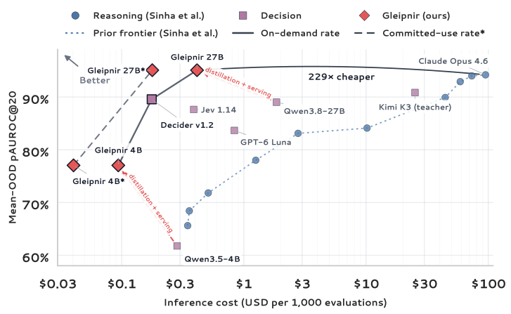

Lightweight Restraints for Powerful Agents
AI control monitors that decide in one forward pass
Abstract
Monitors that review the actions of AI agents add cost and latency to every action they check, and the strongest monitors reason at length before they answer. We present Gleipnir, small open-weight monitors that learn the decision of a frontier teacher directly and score an agent trajectory in a single forward pass, together with a serving stack optimized for this workload. On a suite of six held-out AI control benchmarks, Gleipnir 27B matches the strongest reasoning monitor (0.951 against 0.942 mean pAUROC@20) at 229 times lower cost, and scores 0.055 above the strongest decision model at the same cost. On attacks built to evade monitors and on reward hacking by other agents, Gleipnir, like other low-cost monitors, misses many harmful runs, so it suits a first line of defense rather than a sole safeguard. We release the code, teacher probabilities, weights and serving image under the MIT licence.
The name comes from the ribbon in Norse myth that binds the wolf Fenrir: as thin as silk, yet stronger than any chain.

Models
| Model | Merged BF16 checkpoint | LoRA adapter | Base model |
|---|---|---|---|
| Gleipnir 4B | Jazhyc/Gleipnir-4B-BF16 | Jazhyc/Gleipnir-4B-LoRA | Qwen3.5-4B |
| Gleipnir 27B | Jazhyc/Gleipnir-27B-BF16 | Jazhyc/Gleipnir-27B-LoRA | Qwen3.8-27B |
Use the merged checkpoint to run the monitor and the adapter to fine-tune it further. The model cards give the instruction and a complete example.
Quickstart
On one NVIDIA B200 or B300, the serving image downloads the checkpoint and serves the optimized stack:
docker run --gpus all -p 8000:8000 \
-v "$HOME/gleipnir-models:/models" -e GLEIPNIR_MODEL_CACHE=/models \
ghcr.io/jazhyc/gleipnir-serve:1.2 4b # or 27b
curl -s localhost:8000/v1/monitor/score -H 'Content-Type: application/json' \
-d '{"model": "monitor", "prompt": "<rendered prompt ending in Prediction:>"}'On any other GPU, the merged checkpoints run with stock vLLM or Transformers; the README gives both recipes. Because our thresholds come from benchmarks, set your own threshold on your benign traffic before you deploy a monitor.
Citation
@techreport{ferrao2026gleipnir,
title = {Lightweight Restraints for Powerful Agents: AI Control Monitors That Decide in One Forward Pass},
author = {Ferrao, Jeremias and Rajeev Kumar, Abhinav},
year = {2026},
note = {Technical report}
}